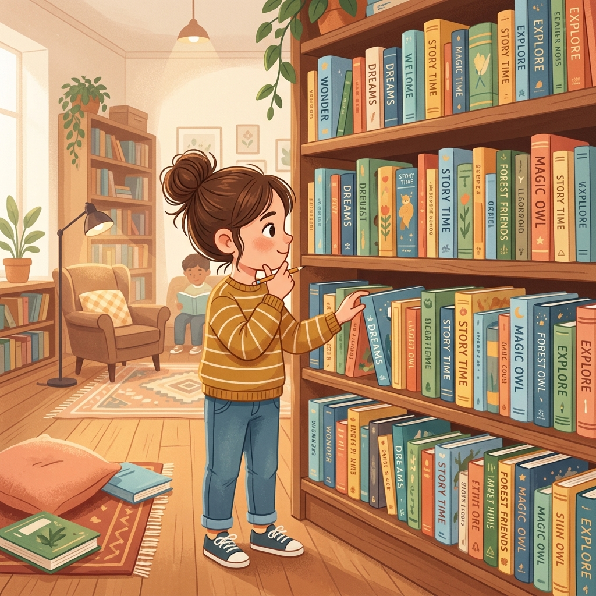

쉽고 재미있게 생각을 나누는 그림책 토론
생각의 꽃을 피우는
생각의 꽃을 피우는
그림책 토론 가이드
그림책의 아름다운 감성과 혁신적인 토론 기법을 결합하여, 아이들의 비판적 사고와 따뜻한 공감 능력을 동시에 기르는 인터랙티브 안내서입니다.

Search & Recommendation
그림책 검색 & 기법 맞춤 추천
보유하고 계신 그림책이나 적용하고 싶은 토론 기법을 검색해 보세요. 최적의 연계 추천이 실시간으로 제공됩니다.
맞춤 필터:
위 검색창에 그림책이나 토론 기법을 입력하시면 맞춤형 연계 추천 결과가 여기에 나타납니다.
Picture Book Library
그림책 서재
토론 수업의 깊이를 더해주는 아름다운 그림책과 작가 소개, 줄거리입니다.
Reference Books
참고 도서
이 사이트의 토론 이론·기법·커리큘럼이 바탕으로 삼은 책들을 소개합니다. 표지를 누르면 도서 정보로 이동합니다.
Debate Theory
토론 이론
Debate Techniques Catalog
토론 기법
다양한 그림책 토론 도서에서 검증된 토론 기법들을 한눈에 확인하고 수업에 적용해 보세요.
Printable Worksheet Generator
그림책 토론 학습지 메이커
그림책과 토론 양식을 선택한 후 직접 작성하거나 인쇄하여 학생들에게 나누어 주실 수 있습니다.
위 '학습지 생성하기'를 클릭하시면 여기에 인쇄 및 편집 가능한 학습지가 로드됩니다.
Debate Classroom Resources
토론 수업 자료실
그림책 토론 설계 헬퍼
『그림책 토론 100』 및 『열두 달 그림책 토론』을 바탕으로 상황별 맞춤 가이드와 월별(열두 달) 추천 커리큘럼을 실시간으로 설계해 드립니다.
Reading Review
독서평설
지학사 독서평설이 다루는 갈래별 읽기 주제를 그림책 토론으로 연결했습니다. 학교급을 선택해 보세요.